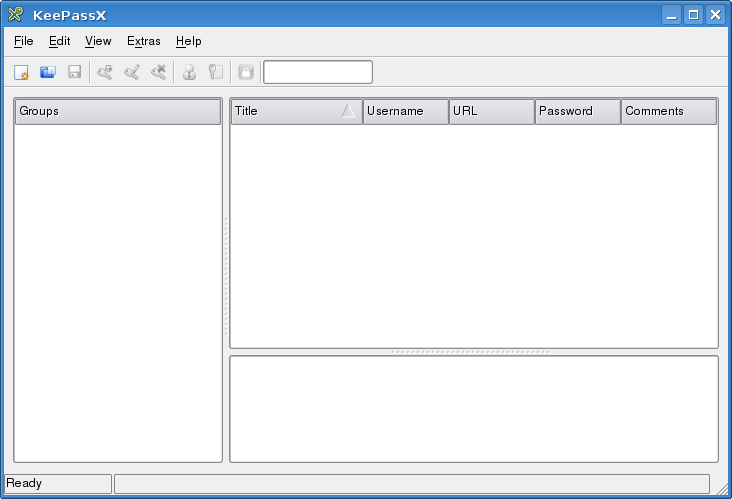
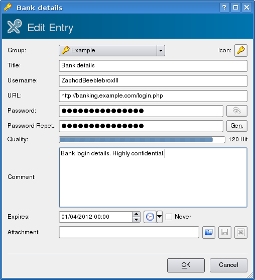

Password Management with KeePassX
Introduction
Many of our readers will be familiar with the problems of password management. How do you keep track of logins for dozens or hundreds of systems and websites without reusing the same user name and password over and over? How do you generate passwords for different sites with different constraints on what constitutes an acceptable password? How can you securely transfer password lists between systems?
There are a whole bunch of solutions to some of these requirements: I use kwallet, Firefox's password manager and Opera's wand to meet some of my requirements, but they all have serious limitations. To meet all those requirements I now use KeePassX, which is a free (GPL), cross platform password safe. It also incorporates a password generator. KeePassX is easy to use and employs high grade encryption to keep your passwords safe.
This article will give a brief introduction to KeePassX and demonstrate how to use it.
Simple use as a password safe
When you open KeePassX for the first time you get a window with a number of blank panes. Passwords can not be saved at this point. All passwords must be stored in a group, within a database.
Start by selecting "File"->"New database" (shortcut CTRL-N). or clicking the left-most icon on the tool bar. You will be prompted for a password (or a key file):

The button to the right of the password field toggles password visibility, so you can read the password and check that it is correctly typed, or hide it from other people in the room.
After creating a database the next step is to create a group with "Edit"->"Add New Group" (shortcut CTRL-G). You need to enter a group name and you can also select an icon to go with the group name, if you don't want the default key icon. I have created a group called, surprisingly, "Example" for this article.
Once a group has been created passwords can be entered with "Edit"->"Add New Entry" (shortcut CTRL-Y). This pops up a dialog allowing entry of user names, passwords and a selection of other details.
The entry can include a title, a user name, a URL for web pages, an expiry date and a comment. If this is not enough, you can also attach arbitrary files. If you need to see what you are typing the button with the eye icon to the right of the password toggles password visibility. When entering the repeat password the background is red until the repeat password matches the main password.
Having entered your passwords In KeePassX, they are easy to access in a secure fashion. By default passwords are not displayed, but this can be toggled in the view menu. They can be used without having to display them, by right clicking on the entry and selecting "Copy Password to Clipboard". They can then be pasted where they are needed in the usual way.
Using the password generator
There are 3 ways to access the password generator. To simply generate a password select "Extras"->"Password Generator" or use CTRL-P as a shortcut. If you are generating a password for an entry in the database, the password generator can also be accessed via a button labelled "Gen." next to the "Password Repet.:" entry box.

The password entry screen allows the customisation of password generation according to various criteria, such as length and whether or not to use upper and lower case, numbers, spaces, special characters, minus and underscore. There are also tabs for generating "pronounceable" passwords and using custom sets of characters. The custom tab does not offer an obvious way of entering ranges of characters and a quick scan of the source code suggests that this is not a supported feature.
When you have selected your criteria, press the "Generate" button to create a password. If you are not saving the password, it seems that you have to make the password visible, by pressing the eye icon, to copy it. If you are editing an entry, clicking "OK" in the generate dialog fills in the password.
Cross Platform Use
The KeePassX downloads page offers source code plus packages for Windows, MacOS X, Ubuntu, OpenSuSE and Fedora. KeePassX is also in the official Debian repositories.
Password databases generated on Linux or MacOS can be copied to Windows PCs and accessed from there and vice-versa.
Other Features
KeePassX offers a choice of AES(Rijndael) or Twofish encryption algorithms in "File"->"Database Settings". The number of encryption rounds can also be adjusted.
KeePassX can import PwManager files and XML files exported from kwalletmanager. It can export to plain text or XML.
Postscript
In between writing this article and it's publication, I was notified that a website on which I have a login had been cracked and I should consider the user name and password compromised. This password dated back to before I started using KeePassX and like many of my older logins, it had not been updated to use stronger passwords. At that time I had also followed a practice of using a limited number of user names and very simple passwords on "low value" sites to minimise the amount I had to remember. As a consequence a number of logins were at risk if the attackers tried that user name and password on other sites I used.
I was lucky that the user name on this site was not the user name I used most often, so the number of sites at direct risk was relatively small. This has, nevertheless, provided the motivation for me to update my password on all "low value" logins and any other passwords that appear weak.
In the process of updating these passwords I have noted that the "password strength" measure provided by KeePassX is essentially useless as it is calculated by simply multiplying the password length by 8. The string "aaaaaaaa" is given the same strength as "hr~9kl_p7". I would prefer no strength indicator to a misleading indicator. [1]
I have also noted that when you copy a password from KeePassX, all the passwords are erased from klipper (KDE's clipboard history tool) a short time thereafter.
[1] http://en.wikipedia.org/wiki/Password_strength#Entropy.2C_or_bit_strength
Talkback: Discuss this article with The Answer Gang
Neil is a programmer, specialising in C++ on Unix and Linux. He has degrees
in Computer science and Next Generation Computing.
Neil has worked on a wide range of systems from the control system for the
British Gas national grid to video servers for the Home Choice video on
demand service. He first programmed computers in 1980 with his school
General Studies class, which was allowed access to a mainframe at The
National Institute of Oceanography, programmed in Fortran on punch cards.
A computer science degree followed at Queen Mary College, London, then Neil
worked for Logica for 3 years before taking an MSc in New Generation
Computing at Exeter University.
The next 5 years saw Neil researching parallel simulation algorithms at the
Royal Signals and Radar Establishment, initially on transputers and
subsequently on SPARC based parallel systems. Since leaving RSRE, Neil has
mostly worked freelance and has worked on financial data feeds, video
servers and virus scanning proxies.
Neil first used Unix at college in 1982 and started working on Linux in
1996.
As of May 2004, Neil is working for Wirefast a global messaging company.
Outside of computing, Neil is into motor sport, particularly Formula 1, the
World Rally Championship and the British Touring Car Championship. He
doesn't race himself. If you've seen Neil's driving, you'll understand why.